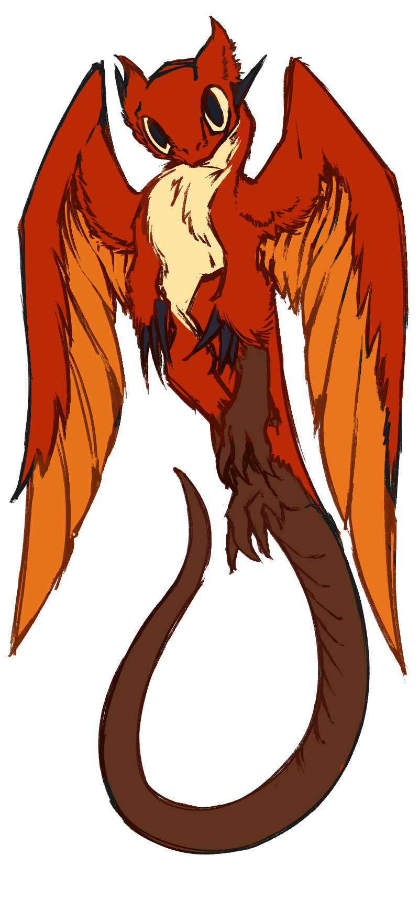

Unconditional Grace: 
to reach out with your worn, calloused hands, and lend others your patience, understanding, and love, no matter what. despite all of the pain and exhaustion, you continue to hold me tight to your heart, even when your world is on fire. to be kind in a cruel world. it's rare to find someone who has unconditional grace, but those who do often are the best at painting!
thank you always lending me so much grace, victoria.
you've been through so much over the last year. expectation, work, stress, pressure, the future, all of it must be so overwhelming. so frustratingly crushing and tiring. you walk a brambled path: you are pricked, poked, and scratched as you move forward; scars proof of the difficult road you've waded through. and despite all of the pain you've had to endure, you still reach your hand out. you still are paitent, kind, and loving.
how do you do it, victoria? it doesn't matter how exhausted or worn you are, you still lend others your gentle grace. even when they do not lend that same hand to you. even when they don't need it. even when i loved you in a way that you could not reciprocate. you still lend your hand. you still care. you still hold me close anyways.
that's why you're incredible, victoria. your heart is so giving and sweet, even when it's so tired. i hope the cruelty of time doesn't erode away that kindness within you, because it truely is something so special. to love despite everything life throws at you. despite everything i've thrown at you. so, thank you for letting me hold you tight to my heart too. thank you for letting me love you the same way you've loved me. thank you for being so kind in such a cruel world. and i hope i can give you some of the grace that you've so unconditionally given me.
with that being said, i'm so proud of the steps that you've made to stand up for yourself more. we have only so much kindness to give, right? and, more than anything, you deserve some of that kindness for yourself too.
thank you for everything, victoria. i'll always be here for you, just like how you've always been there for me too. like you said, that's what friends are for afterall~ happy thanksgiving!
love, stephen